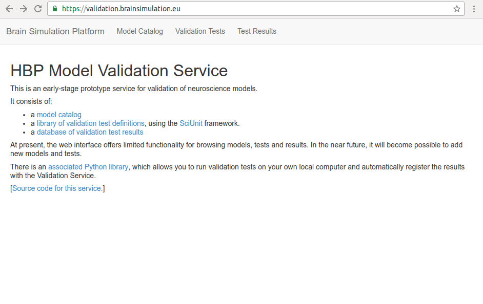

∙ Installation and Set-up.
∙ Choosing and Loading a Model.
∙ Choosing and Loading a Test.
∙ Running the Desired Validation Test On the Chosen Model.
∙ Store the Data of the Results and then Register.
∙ All the above from a python script.
Storing the Data of the Validation Test Result and Register the Data with HVF Database.
Purpose
The user had run the desired test on the chosen model. The user wants to store the results data and also register the results data to HVF database.
./figs/depol_block/Bianchi/.
|
|
|
Purpose
Set up a location (directory) to store results data. Then store the results data in the chosen location.
How to.

Let's say the user wants to put the results data in the storage of the collab https://collab.humanbrainproject.eu/#/collab/1655/ [Errata: The link and collab number since this tutorial has changed to https://collab.humanbrainproject.eu/#/collab/1771/ But the principle illustrated here remains unchanged.]
From the collab. link https://collab.humanbrainproject.eu/#/collab/1655/ you see that this collab ID is 1655.
The user creates a directory in the chosen collab storage. Say,
VUC_Bianchi_DepolTest_results is the name of the directory where the results data will be stored.Therefore,
>> from hbp_validation_framework.datastores import CollabDataStore>> collab_storage = CollabDataStore (username="lungsi",collab_id="1655",base_folder="VUC_Bianchi_DepolTest_results")The
hbp_validation_framework method CollabDataStore in addition to username the two other arguments are: collab_id and the base_folder.
After running the code to store the data the user can now visit the collab storage and see that there is a VUC_Bianchi_DepolTest_results directory containing the results data.
Purpose
Register the results data.
How to.
>> test_library.register(score, collab_storage)
After running the code visiting HVF 'Test Results' shows the registration of the results data in the HVF database.
